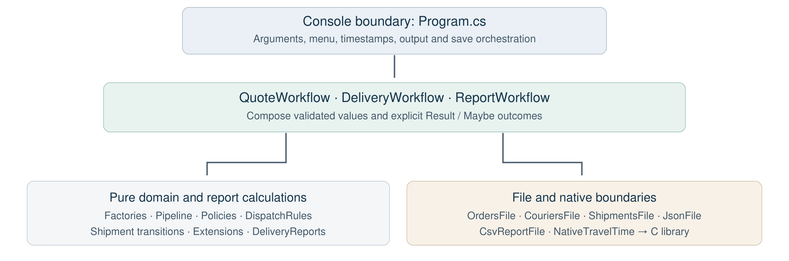

Project report | Introduction to Functional Programming | 2026–2027
Student: Berdalin Yerbol | Group: IT-2513 | Date: 12 November 2026. Student details are taken from Assignment 6; no additional team members were supplied.
The application helps a delivery dispatcher calculate prices, assign orders to suitable couriers, record completion and produce reports. A valid order may still exceed a courier’s remaining capacity or service range. The goal is to enforce these business rules through composable functions and explicit outcomes.
The final application continues Assignments 5–8. It provides a console menu and commands, loads local JSON, saves shipments and exports CSV. Four workflows use the same orders, couriers and shipments:
| Workflow | Input and rules | Result |
|---|---|---|
| Calculate quotes | Order or order list, capacity and pricing function. Check lookup and weight. | Quote or sorted batch summary. |
| Dispatch order | Order, courier, shipment history and time. Check duplicates, range and active load. | New InTransit shipment saved to JSON. |
| Complete delivery | Existing shipment and completion time. Check sequence and chronology. | Delivered shipment saved to JSON. |
| Prepare reports | Capacity, speed and minimum quote cost. Calculate eligible prices and summaries. | Quote reports, courier workload and CSV. |
| Model | Main data and relationship |
|---|---|
| DeliveryOrder | ID, destination, distance, weight and mode. One order can have at most one shipment. |
| Courier | ID, name, capacity, service range and speed. One courier can carry multiple shipments. |
| Shipment | OrderId, CourierId, price, estimate and timestamps. Links an order to its courier. |
The initial sample dataset contains five orders, three couriers and an empty shipment list. Domain models have read-only properties and restricted constructors. Factories reject invalid values; transformations create new collections and leave caller-owned data unchanged.
// Example order in sample-data/orders.json
{"Id":"ORD-101","Destination":"Almaty","DistanceKm":20,
"WeightKg":5,"Mode":"Standard"}
// Initial sample-data/shipments.json
[]Requirement-to-code mapping: functional core, composition and operation ordering
Program.cs handles input, output, clock values and saving. Workflows compose domain operations; file and native adapters handle side effects. Calculations, validation and report functions can be tested without console input or file access.

Figure 1. Console boundary, workflow composition, pure calculations and operational adapters.
| Required technique | Implementation and use |
|---|---|
| Pure, immutable core | DeliveryOrder.Create; Courier.Create; Shipment; DispatchRules.Check; DeliveryReports. Validated models and new results. |
| Three-stage pipeline | Pipeline.FilterEligible → CalculateQuotes → CreateSummary. The quotes command filters, prices and summarises a batch. |
| Higher-order behaviour | Policies.CreatePricing returns Func<DeliveryOrder, decimal>. Workflow parameters accept that delegate and change actual prices. |
| Meaningful pattern matching | Policies.ModePricing selects the tariff by mode. Shipment.Complete selects the transition by shipment status. |
| Safe operation sequence | DeliveryWorkflow.Dispatch checks prerequisites; Complete requires an existing shipment. A first completion creates a copy; repeating it preserves the original delivery time. |
| Result, Map and Bind | QuoteWorkflow.CreateQuote and DeliveryWorkflow.Dispatch connect fallible steps with Bind and transform successful payloads with Map. Failure skips later dependent calls. |
| Explicit missing lookups | Maybe<T>; FindOrder, FindCourier and FindShipment return presence or absence, converted through ToResult. |
Pricing is base fee + distance × rate/km + weight × rate/kg. Standard uses 500, 40 and 25 KZT; Express uses 1000, 80 and 50; Priority uses 1500, 120 and 75. The default mode policy chooses from the order’s mode; explicit standard and express options override it.
For ORD-101, Standard gives 500 + 20 × 40 + 5 × 25 = 1425 KZT; Express gives 2850 KZT. The batch pipeline handles empty input with a zero summary and orders equal-cost quotes by order ID.
Actual lifecycle output and the boundaries that protect stored data
The excerpts below were captured from the running application using a separate sample-data copy. delivery is a short label for the built application; the dotnet run syntax is given on the final page.
$ delivery quote ORD-101 30 ORD-101 to Almaty: 1425.00 KZT $ delivery dispatch ORD-101 C-01 SHP-ORD-101 | ORD-101 | C-01 | InTransit | 1425.00 KZT | 30 min $ delivery complete SHP-ORD-101 SHP-ORD-101 | ORD-101 | C-01 | Delivered | 1425.00 KZT | 30 min
Dispatch checks the order and courier lookups, duplicate history, courier range and combined weight of active shipments before pricing and time estimation. Completion releases that weight capacity. Program.cs reports success only after the new shipment list is saved.
| Failure | Expected outcome |
|---|---|
| Missing order or courier | ORDER_NOT_FOUND / COURIER_NOT_FOUND; pricing and native calculation are skipped. |
| Invalid capacity or overloaded courier | INVALID_CAPACITY / WEIGHT_LIMIT. Equality with the capacity limit is allowed. |
| Out-of-range or repeated dispatch | OUTSIDE_COURIER_RANGE / ORDER_ALREADY_DISPATCHED. |
| Complete before dispatch or before dispatch time | SHIPMENT_NOT_FOUND / INVALID_DELIVERY_TIME. Existing state is preserved. |
DeliveryData.Load connects OrdersFile, CouriersFile and ShipmentsFile using Bind/Map. Loaders validate required JSON fields, duplicate IDs, factory rules, shipment references, dates, courier range and active load. Orders allow 0 < distance ≤ 500 km and 0 < weight ≤ 50 kg. Courier speed is 1–120 km/h; capacity and range are positive, at most 500.
OrdersFile and JsonFile catch relevant file and JSON exceptions and return FILE_NOT_FOUND, MALFORMED_DATA or FILE_READ_ERROR. ShipmentsFile.Save and CsvReportFile.Save write a temporary file, close it and replace the target. Expected write failures return structured errors and trigger cleanup; an existing target is preserved if writing fails. CSV uses invariant numbers and escaped fields.
NativeTravelTime calls native/deliverymath.c through DllImport [3]. It validates inputs, rounds distance up to metres and duration up to minutes; 20 km at 40 km/h gives 30 minutes. Missing or invalid libraries, absent entry points and invalid native results become failures. Tests can inject a replacement calculation delegate.
Required extension methods, LINQ queries and controlled materialisation
| Report and method | Operations and result |
|---|---|
| Eligible quotes — DeliveryReports.Dispatch | Where and Select; cost descending, then order ID. Applies the minimum-cost filter and supplies CSV rows. |
| Totals by mode — TotalsByMode | GroupBy, Count and Sum; total descending, then mode. Includes all capacity-eligible orders, without the minimum-cost filter. |
| Courier workload — CourierWorkload | GroupJoin, filtering, counts and sums; active weight descending, then courier ID. Includes idle couriers and revenue from completed shipments. |
Eligible order quotes: ORD-102 | Astana | Express | 5225.00 KZT | 68 min ORD-104 | Karaganda | Standard | 1750.00 KZT | 45 min ORD-101 | Almaty | Standard | 1425.00 KZT | 30 min Quoted totals by mode: Express | 1 orders | 5225.00 KZT Standard | 2 orders | 3175.00 KZT
These values come from report quote-report.csv 30 40 0 with the default mode policy. After completing ORD-101, C-01 has one delivered shipment, zero active weight and 1425 KZT delivered revenue. Quotes remain estimates and are not counted as completed revenue.
OrderId,Destination,Mode,Cost,EstimatedMinutes ORD-102,Astana,Express,5225.00,68 ORD-104,Karaganda,Standard,1750.00,45 ORD-101,Almaty,Standard,1425.00,30
DeliveryExtensions.ForVehicle uses Where to select orders within capacity. ToPricedOrders accepts a delegate and uses yield return to calculate prices during enumeration. ReportWorkflow uses both extensions, then captures a reusable snapshot with ToArray before calculating multiple reports [2].
var pricedOrders = orders.ForVehicle(capacity)
.ToPricedOrders(pricing).ToArray();
Before enumeration: 0 pricing calls.
After ToArray: 3 pricing calls for 3 orders.
Reused snapshot total: 8400.00; pricing calls: 3.Enumerating the original deferred sequence again recalculates prices; reusing the array does not. DeferredExecutionTests verifies both behaviours. The full captured application output and exported data are in reports/evidence.
Verified on 12 November 2026 with .NET SDK 10.0.301, macOS arm64
The recorded xUnit run executed 76 cases: 76 passed, 0 failed and 0 skipped. Theory data rows count as individual cases. The evidence is reports/evidence/delivery-tests.trx. The captured application transcript also contains 14 scenarios with expected exit codes.
| Test classes | Cases | What is verified |
|---|---|---|
| PipelineTests / FactoryTests | 3 / 4 | Normal/empty summaries, valid factory input, invalid weight/distance/ID and configurable pricing. |
| OutcomeTests / DeferredExecutionTests | 4 / 3 | Map/Bind success and failure; lookup absence; deferred iteration and cached snapshots. |
| DeliveryWorkflowTests | 15 | Dispatch/completion, missing prerequisites, capacity/range, duplicates, chronology, native failure and custom policy. |
| ReportTests / CourierReportTests | 4 / 4 | Filtering, grouping, tie-breakers, empty data, active weight and delivered revenue. |
| OrdersFileTests / CouriersFileTests | 3 / 14 | Valid, missing, malformed and domain-invalid files. |
| ShipmentPersistenceTests | 12 | Save/reload lifecycle; invalid references, duplicates, overload and write failure. |
| CsvReportFileTests | 4 | Escaping, invariant numbers, writer disposal and preservation of an existing report on failure. |
| ReportWorkflowTests / NativeTravelTimeTests | 3 / 3 | Complete report export and real native calculation, rounding and invalid inputs. |
Eight pure/domain cases are directly covered by normal summary, empty summary and configurable pricing in PipelineTests; valid construction, invalid weight, invalid distance and missing ID in FactoryTests; and exact capacity/range in DeliveryWorkflowTests. Expected calculations and validation outcomes matched the assertions.
Two complete workflows are DispatchThenComplete_ProducesNewStatesAndPreservesInput and Run_NormalInput_ProducesBothReportsAndExportsCsv. ShipmentPersistenceTests additionally covers dispatch → save → reload → complete → save → reload. OrdersFileTests covers both required file failures: missing file and malformed JSON. All these cases passed.
No failing production test was observed in the recorded run, so no discovered application defect is claimed. Integration review strengthened the inherited CSV test with an assertion for the escaped quoted field and added a simulated writer failure. The expected outcomes are preserved original CSV content and no leftover temporary file; both passed.
dotnet test DeliveryPipeline.sln -c Release --no-build # Recorded result: 76 passed, 0 failed, 0 skipped
Reproducible setup and the remaining submission fields
Requirements: .NET 10 SDK and Xcode command line tools on macOS Apple Silicon. The verified SDK is 10.0.301; global.json allows newer .NET 10 feature bands. The first restore requires NuGet access. Run from the project directory:
sh native/build.sh dotnet build DeliveryPipeline.sln -c Release dotnet test DeliveryPipeline.sln -c Release --no-build dotnet run --project DeliveryPipeline -c Release --no-build
The last command opens the menu. sh run.sh performs all four steps. Add -- quote ORD-101 30 after dotnet run to execute a command. For an isolated session, copy the data and select it explicitly:
cp -R sample-data working-data dotnet run --project DeliveryPipeline -c Release --no-build \ -- --data ./working-data dispatch ORD-101 C-01
The selected directory needs orders.json, couriers.json and shipments.json; [] initialises shipments. The report command accepts CSV path, capacity, speed and minimum cost. Numeric input uses a decimal point. Success returns exit code 0; failure returns 1.
The native library currently supports macOS arm64. Only one process should write a shipment file. Time estimates use configured speed, without real traffic or route optimisation. Cancellation, redelivery, record-editing forms and a database are outside the implemented scope.
Repository URL: not supplied. Branch: not supplied. Final commit: not supplied. These must be recorded here and in README before submission; the archive must match that commit. source-sha256.txt identifies the checked local files but is not a Git commit. The separate individual contribution report is still required.
| Feature or material | Recorded provenance / responsibility |
|---|---|
| Original pipeline, outcomes, quote reports and native adapter | Supplied Assignments 5–8; student named in Assignment 6: Berdalin Yerbol, IT-2513. |
| Final courier/shipment logic, persistence, CLI and added tests | AI-assisted implementation during this session. Student review and ownership: Berdalin Yerbol, to confirm. |
| Project report and verification material | Prepared with AI assistance from the actual code, test results and application runs. |
AI assistance is acknowledged. Instructor permission must follow the course policy [1]. No additional team members or individual authorship claims are inferred.
[1] Final Project Requirements.pdf, Introduction to Functional Programming, 2026–2027; supplied course brief.
[2] Microsoft Learn: Deferred execution and lazy evaluation.
[3] Microsoft Learn: Platform Invoke (P/Invoke).
[4] xUnit.net: Getting Started with xUnit.net v2.
External dependencies: xUnit 2.9.3, Microsoft.NET.Test.Sdk 17.14.1, xunit.runner.visualstudio 3.1.4 and coverlet.collector 6.0.4. Source and versions are included in the solution; actual outputs and TRX results are in reports/evidence.